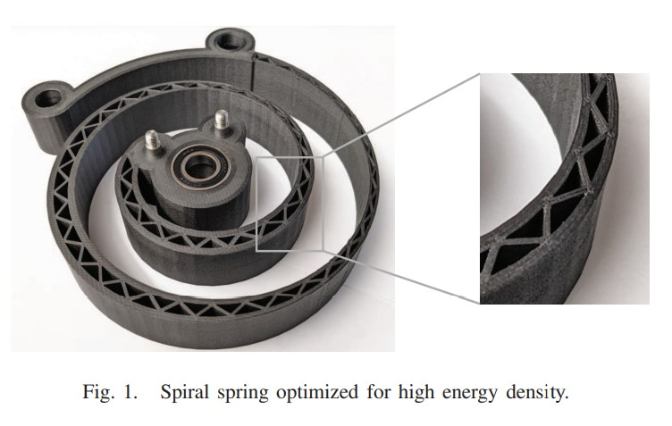
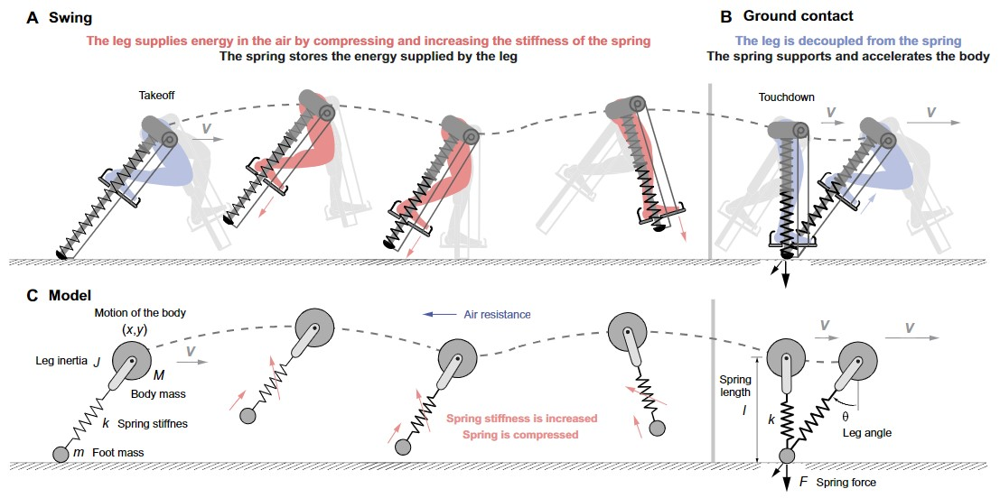
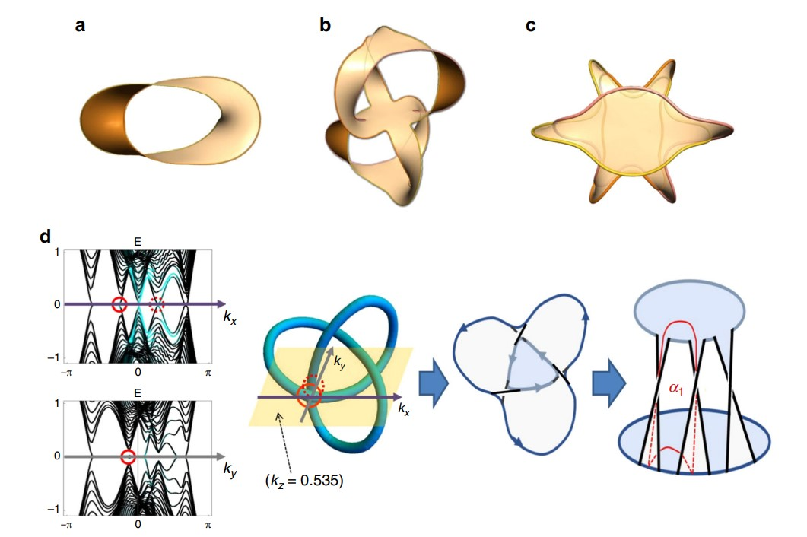
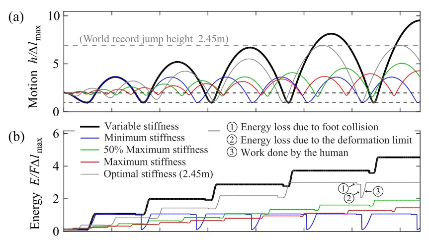
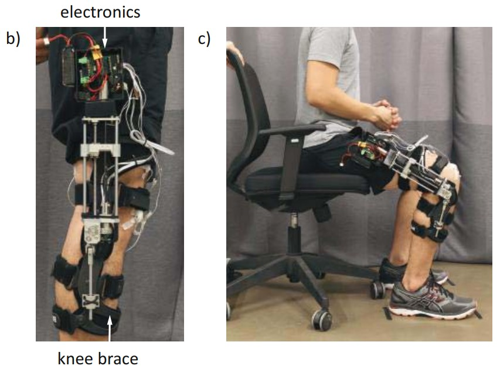

|
Research Interests
I develop 3D printable passive mechanisms as part of the Advanced Robotics and Control Lab(PI: Dr. David Braun, link).
Passive mechanisms are devices which can store and manipulate energy without requiring an internal power supply.
Example applications include:
I also research ways to use artificial intelligence/optimization and quantum computing to aid human designers in automatically designing passive mechanisms,
potentially enabling faster problem-solving and enabling more complex tasks to be achieved.
Full CV.
Past Projects
|
Quantum Computing | Optimization | Machine Learning
Recently completed an Introduction to Quantum Computing course at The Wond'ry Quantum Studio at Vanderbilt university.
Part 1 of the course included the basics of programming a gate quantum computer and implementation of basic algorithms (quantum teleportation, Deutsch-Josza algorithm, Grover's algorithm) using IBM's Qiskit python library. link to certificate. Part 2 of the course included the basics of using quantum annealing to solve optimization problems using D-wave's python library Ocean. link to certificate. |
|
|  |
Optimization | 3D-printing | Nonlinear Ordinary Differential Equations | Numerical Simulation
Amanda Sutrisno and David J. Braun, High-energy-density 3D-printed Composite Springs for Lightweight and Energy-efficient Compliant Robots, arXiv preprint arXiv:2211.09245, (2022).
link
Theoretical modeling and simulation of a torsion spiral spring. Shape optimization algorithm increased energy density of a 3D printed spring by 45% compared to a uniform thickness solid spiral spring. |
|  |
Dynamics | Nonlinear Ordinary Differential Equations | Numerical Simulation
Amanda Sutrisno and David J. Braun, How to Run 50%
faster without external energy, Science Advances, (2020).
link
Theoretical modeling and simulation of a battery-less leg exoskeleton to allow a human to run up to 50% faster. Simulation video. This paper was publicized in The Guardian. link |
|  |
Solid State Physics | Electronics | Machine Learning | Optimization | Data Analysis
Ching Hua Lee, Amanda Sutrisno, Tobias Hofmann, Tobias Helbig, Yuhan Liu, Yee Sin Ang,
Lay Kee Ang, Xiao Zhang, Martin Greiter, Ronny Thomale, Imaging nodal knots in momentum space through topolectrical circuits,
Nature Communications, (2020).
link
Modeling and experimenting with the physics of exotic matter, i.e topological insulators, using RLC electronic circuits. This paper was publicized in phys.org link |
|  |
Dynamics | Ordinary Differential Equations | Numerical Simulation
Amanda Sutrisno and David J. Braun, Enhancing mobility with quasi-passive variable stiffness exoskeletons,
IEEE Transactions on Neural Systems and Rehabilitation Engineering, (2019).
link
Theoretical modeling and simulation of a battery-less leg exoskeleton to allow a human to jump up to 3x higher. |
|  |
Electronics | Microcontroller Programming | Control Theory | Data Analysis
Hong Fai Lau, Amanda Sutrisno, Tze Hao Chong, David J Braun, Stiffness
modulator: A novel actuator for human augmentation, 2018 IEEE International Conference on Robotics and Automation (ICRA), (2018).
link
Experimental prototype knee exoskeleton to reduce the human effort in a sit-to-stand task. |
Skills
My work is highly inter-disclipinary and employs three main skillsets:
Modeling/Simulation
| Theory | Implementation |
|---|---|
|
|
Automatic Design
| Theory | Implementation |
|---|---|
|
|
|
Experiments/Characterization
| Mechanical Design | Electronics Design |
|---|---|
In addition, I am also familiar with the following for web-development.
Freelancing
I occasionally take on freelance projects related to the following skills:
Please contact amanda@sutrisno.me for enquiries.